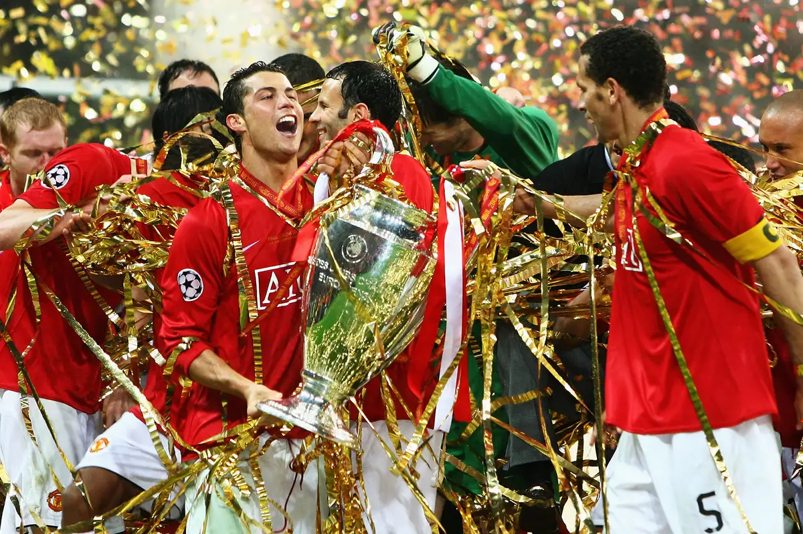
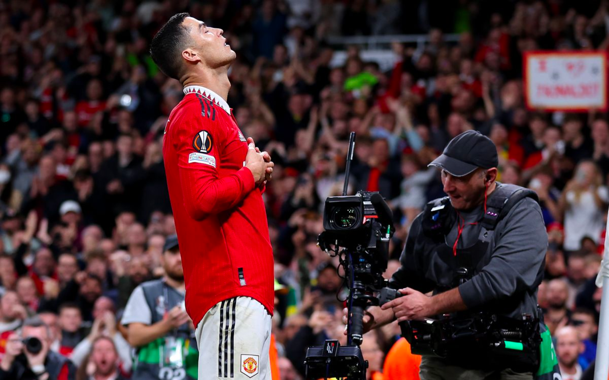

Manchester United
Manchester United Football Club is a professional football club based in Manchester, England. Founded in 1878 as Newton Heath LYR Football Club, the club changed its name to Manchester United in 1902 and has since become one of the most successful football clubs in the world.
The club has won a record 20 League titles, 12 FA Cups, and three European Cups, among numerous other domestic and international trophies. Manchester United has a huge global following and is widely regarded as one of the most valuable and popular sports teams in the world.
The club's home ground is Old Trafford, which has a capacity of over 74,000 spectators. The team plays in the English Premier League, the top tier of English football, and has a fierce rivalry with Manchester City, another top club from the city of Manchester.
Over the years, Manchester United has been home to some of the greatest football players in history, including George Best, Bobby Charlton, Eric Cantona, David Beckham, Cristiano Ronaldo, and Wayne Rooney. The club is currently managed by Erik ten Hag.